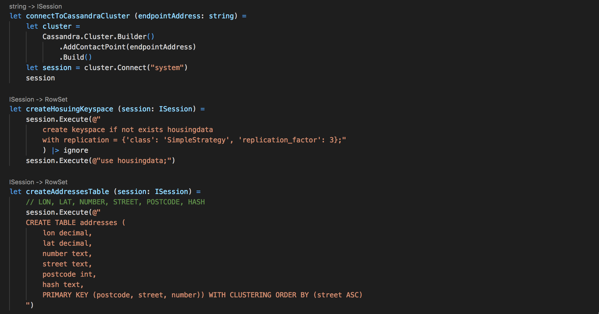

Introduction
In this article, I am going to cover several topics, related to distributed databases, containers, cloud and functional programming.
Prerequisites
I already have a Kubernetes cluster provisioned in Azure. Look here if you would like to create one.
Distributed databases - systems that require stable persistence
If we think about it, a database and data are most valuable parts of any system. Nobody wants to deal with data leaks, instability and data loss, especially. Nobody wants to spend days and nights recovering from an operational or architectural mistake that could cost significant amounts of money. If the database of your choice is best when run on a bare metal cluster, or on something else - that is a good way to go.
Data Stores and containers?
Aren’t containers meant to be ephemeral and used for stateless services? Containers are great for services, especially combined with orchestrators like Kubernetes to manage microservices. Standard containers are meant to be stateless and ephemeral. They will lose and forget data in case of a restart or an error. It is not a good idea to use plain containers for anything that needs persistence. Attaching volumes to Kubernetes pods is not a solution in case of a distributed database either, because certain assumptions need to be made about database cluster nodes prior to creating the cluster. For example, some nodes might have roles, like a leader or a follower. Or there might be cluster nodes designated as “seed” nodes. Even with attaching a volume to each pod, standard containers will still be created with nondeterministic random names, with no guarantees of order in which pods are scheduled to be started, terminated or scaled. Therefore, the assumptions cannot be made.
Why trying to run a database on Kubernetes then?
The flexibility and possibilities Kubernetes includes have proven to lead to more frequent service deployments, it also reduces efforts operation engineers have to put in healing and recovering individual services, it automates a lot of common operations to support the healthy lifetime of the services with recoverability and reliability, and generally provides a convenient way of managing numerous services altogether.
What is the benefit of running a distributed database on Kubernetes? Time it takes to create a Kubernetes cluster with a distributed database on it is just few minutes. Same to destroy the cluster. It can take a long time to properly set up a bare metal cluster, or even a VM one, which is less flexible. If using a containerized distributed database, it can significantly reduce costs spent on clusters for development and testing, because the cluster doesn’t have to exist when unused and it provides more flexibility.
Kubernetes offers a feature called “Stateful Sets”, which allows things that usual Kubernetes deployments don’t guarantee. Each pod in a Stateful Set will always have a unique and predictable name and address, along with an ordinal index number assigned. In addition, each pod will have a persistent volume attached, with a persistent link from pod to the storage. Stateful Set pods will always start in the same order, and terminate in reverse order. These possibilities help eliminate some of the mentioned issues for distributed databases.
Stateful Sets seem legit, doesn’t it?
Software engineering was meant to solve problems, not to create them.
Stateful Sets feature aims to bring Kubernetes a few steps closer to being a good option for production deployment of stateful distributed systems. It is currently in “beta”, here is a list of known issues on Github. I would still be careful about use Stateful Sets in production, for the time being, because this approach isn’t battle tested enough. In the meantime, it is a perfect solution for development clusters.
Headless Service
Currently, Stateful Set pods need help of a so called ”headless” service to function properly. This kind of service is called “headless” because it doesn’t need a Cluster IP available, nor we want any load balancing done with it. In Headless Service, the service definition has a selector, and when the service is accessed, DNS is configured to return multiple A-records/addresses, which point directly to the pods behind that service with the same selector.
Headless Service is needed to manage network identity of the stateful pods.
To create Headless Service for the cassandra, we can use this template:
Storage Classes, Persistent Volume Claims and Persistent Volumes
After Headless Service is created, it is important to understand Storage Classes before we actually create a Stateful Set.

Kubernetes has a concept of Storage Classes. It tells us what types of storage are supported by our cluster. For example, in Azure, we can use azure disks or azure files. Disks can be managed or unmanaged, premium or standard, depends on the required performance or price tier. There are many other Storage Class options corresponding to different providers.
If we explore existing Storage Classes, we can see that default, managed-premium and managed-standard classes are pre-created in my Azure cluster. It is also possible to create a new Storage Class, if needed:
When each pod in a Stateful Set is created, there's a Persistent Volume Claim initiated based on its Storage Class. Simply speaking, it is an abstraction for a request for storage. After the request succeeds, the Persistent Volume is dynamically provisioned for the pod, again, according to the Storage Class that was requested in the Persistent Volume Claim.
Stateful Sets
At this point, Headless Service is created, we have also explored Storage Class options and can create a Stateful Set. Template definition of the Stateful Set can be found here. Feel free to change number of replicas (I've set it to 5).
I’m using managed-premium Storage Class, because my cluster VMs support it:
Do not forget to indicate desired storage class in the Stateful Set template:
Creating the Stateful Set and checking the status of the pods:
Stateful Set pods start to get created.
We can always get more information if we describe a pod:
Logs indicate that FailedScheduling event occurred for the pod. To get more information, let’s describe the Persistent Volume Claim associated with the pod:
This means, the request for storage is currently pending. So we just need to wait for it to be provisioned. Let’s check back in a few seconds/minutes:
Now, new pods are starting to be created one by one, in order. Two of them are ready, and one is creating!
Persistent Volume Claims for running pods will be in “Bound” status:
And showing the “ProvisionSucceeded” event:
Which means the persistent volume was successfully provisioned for the specific pod:
Logs of each running pod in the Stateful Set should indicate successful mount, creation and start:
When the Stateful Set is ready
5 of 5 pods are running! Persistent Volume Claims succeeded and Persistent Volumes are provisioned!
Things to note
When deleting a Stateful Set, Persistent Volumes are not deleted automatically.
Generally, if number of pods in the Stateful Set is less than or equal to number of agents, pods should be scheduled on different nodes. With that, there might be scenarios where some pods are scheduled on the same node, unless we state explicitly that it shouldn’t happen. It’s important for systems like Zookeeper, for example, if there are 3 pods and 2 of them are scheduled for the same node, there will be no quorum anymore when that node dies. Keep things like that in mind to not forget the explicit anti-affinity settings.
Preparing Jobs to run on Kubernetes
At this point, we have a Cassandra cluster up and running using Stateful Sets with Persistent Volumes, on Kubernetes on Azure, yay! To test it out, let’s create a bunch of F# jobs to write data into the Cassandra. We can do that using Kubernetes jobs!
Because I live in wonderful Seattle, I found a dataset of Seattle addresses, which is free and open. I’ve created an F# script that takes chunks of data from that dataset and writes it into the database. And we can have many F# jobs doing this in parallel on Kubernetes!
What does the actual definition of this job look like?
The full set of files can be seen here. If you are not familiar with F#, I’ve used Paket to manage dependencies, VS Code is my editor on Mac OS. I have also created a docker image and pushed it to my repo on DockerHub, so that I can use it in Kubernetes templates.
The main file is called “HousingData.fsx” it accepts 3 command line arguments:
I have used F# Type Providers to work with the dataset:
And defined functions for connecting to the cluster by endpoint, creating the keyspace and the table we are going to use:
Using F# Interactive to experiment with data and test the cluster
It is not possible to access the Stateful Set from the outside of the cluster. Sometimes it is convenient to be able to connect to Cassandra cluster from F# interactive to test things, we can create an external service:
When the service is ready, you will see the actual External IP set when you use “kubectl get services” command.
This is useful if we would like to experiment and test out some things right from F# Interactive, without deploying anything into Kubernetes yet.
Getting real with Kubernetes Jobs
In the job template file "fsharp-job.json", there are three placeholders, which correspond to three parameters that the F# script file expects. To have many parallel jobs running, I use the following code to generate job files with actual parameters populated:

This code is creating a called jobs first. Then, I am saying that I’d like to have 10 jobs, each of them should write 70000 rows into the database, with 14000 elements being a local concurrency index for each job.
Then, under job directory there is a file created for each job:
In these files, placeholders like $START, $STEP and $INCR are replaced with actual appropriate values:
As all the job definitions with real parameters are under "jobs" directory, it is simple to create Kubernetes jobs indicating the directory path:
What's exciting is that you will immediately see new pods, those that correspond to new jobs:
The most exciting part
There are quite a few things we can do to track and explore the progress of the jobs. Here is a full demo:

Connect
Follow me on twitter @lenadroid if you found this article interesting or helpful. My direct messages are open, always happy to connect, feel free to reach out with any questions or ideas!